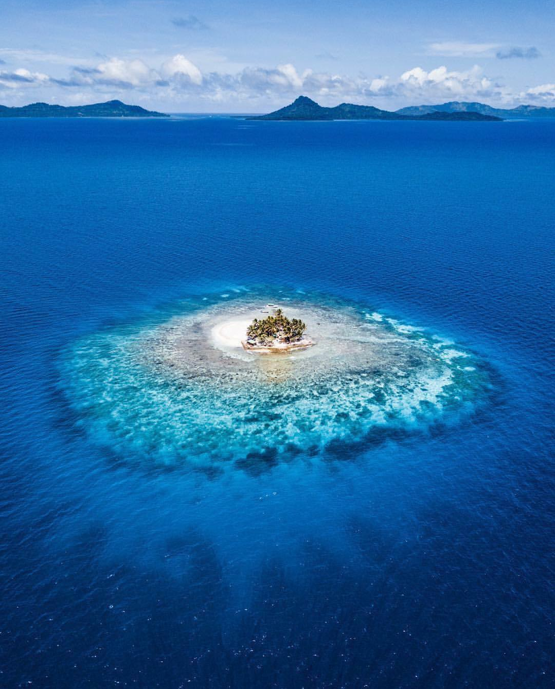
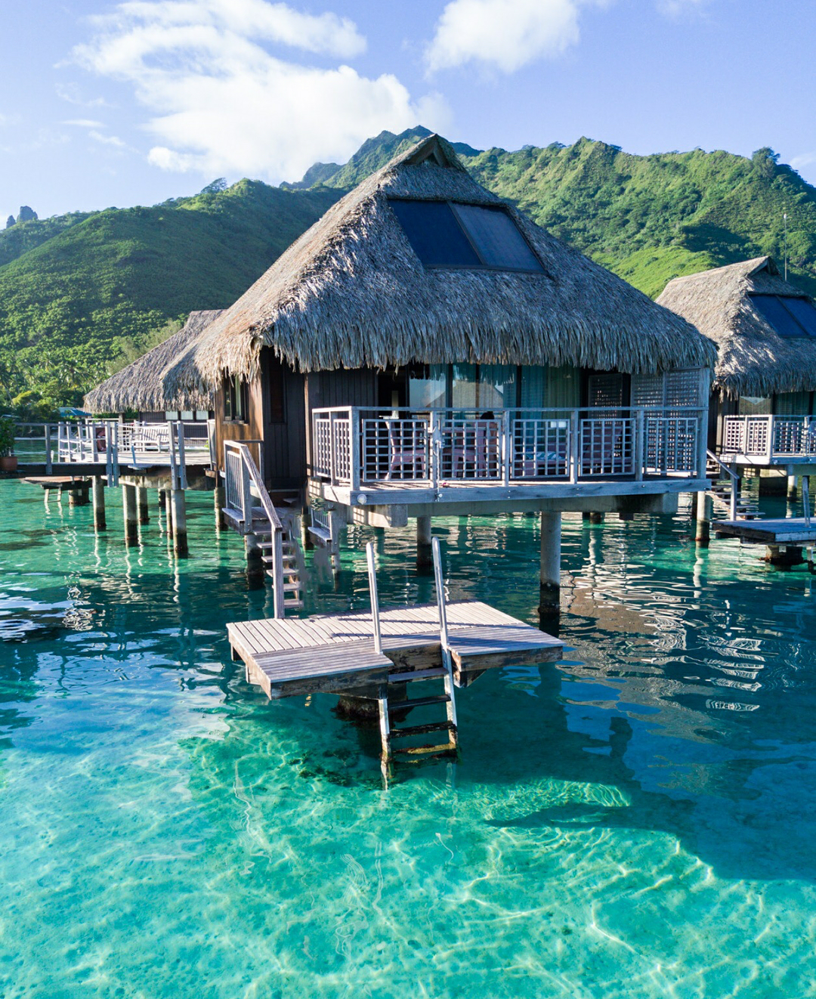
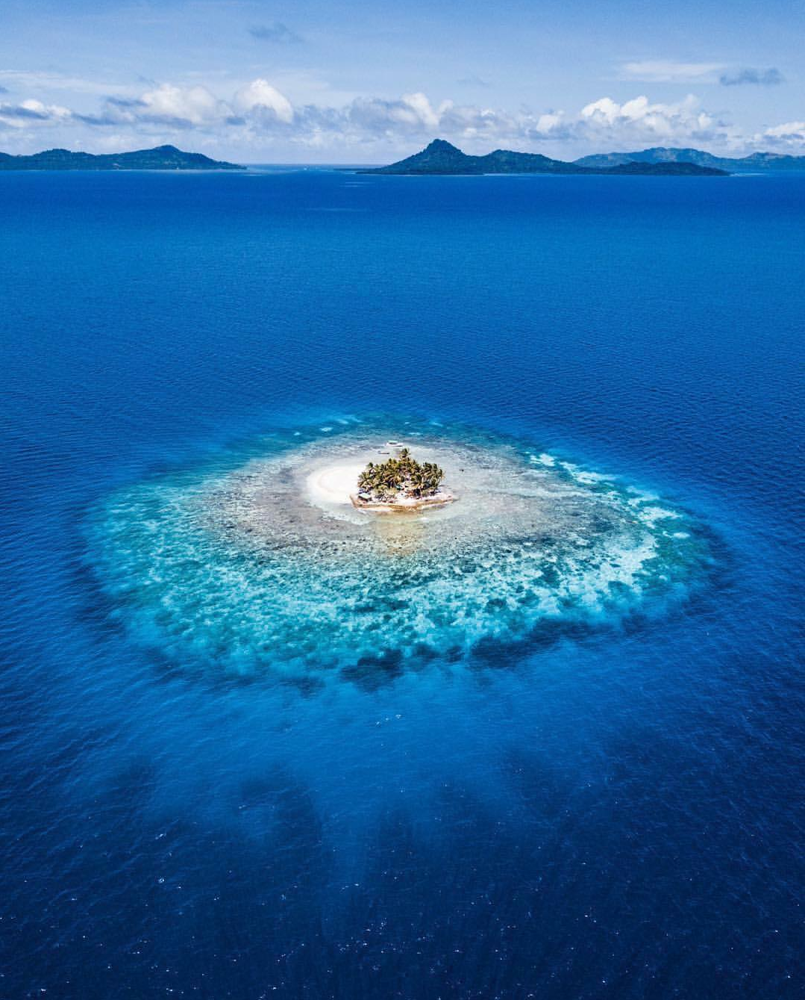
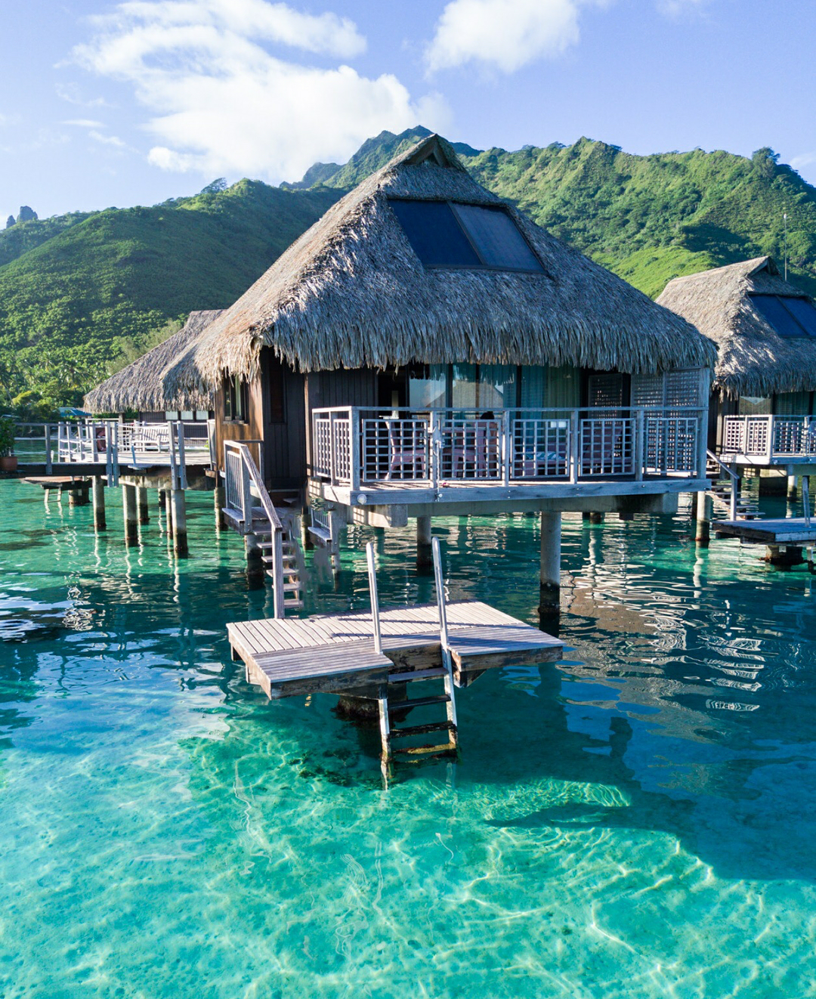

A Oceania é um dos continentes que oferece à você paisagens deslumbrantes e que possibilita o maior conforto possível em suas hospedagens, assim como é um dos continentes que tem a melhor hospitalidade para os visitantes!
A cultura maori é a cultura predominante e mais popular cultivada na Oceania. O povo Maori é conhecido por serem muito bem receptivos. Na língua maori, a palavra maori representa toda uma cultura. Em lendas e outras tradições orais, a palavra distinguia seres humanos mortais de divindades e espíritos.
A Oceania é um lugar bem conhecido não só pelas lindas paisagens, mas também pelas ótimas aventuras possíveis de se vivenciar por lá! Desde esportes radicais a esportes mais tranquilos, você pode optar por qualquer um deles e se tornar um grande aventureiro e explorador!
 





Para um bom descanso,
recomendamos: Tuvalu, Fiji e
Palau, pois são
lugares paradisíacos para
você aproveitar as suas férias.